- Retire el convertidor de par (1).
- Desmonte el perno del soporte del conector del terminal (2) y el soporte (3).

- Desmonte los pernos de soporte (1, 2) y los soportes (3, 4).
- Extraiga los tornillos del soporte del cable de la palanca de selección de posición (5).
- Extraiga el soporte del cable de la palanca de selección de posición (6).
Nota: No vuelva a usar la junta tórica.
- Retire la junta tórica.
- Desmonte el tornillo del radiador de aceite (1).
- Desmonte el refrigerador de aceite (2).

- Retire el tornillo del tubo de relleno de aceite (1).
- Retire el tubo de relleno de aceite (2).

- Usando el punzón botador DT-50189 (1) desmonte el pasador de la palanca selectora de posición (2) y la palanca selectora de posición (3).
- Desmonte los pernos del selector de posición de estacionamiento/punto muerto (PNP) (1).
- Desmonte el selector de PNP (2).
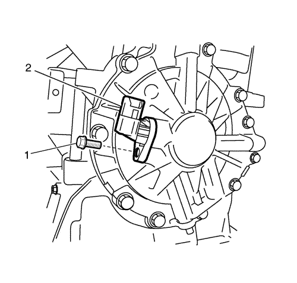
- Quite el tornillo del sensor de velocidad de entrada (1).
- Extraiga el sensor de revoluciones de entrada (2).

- Ponga el tornillo del sensor de velocidad de salida (1).
- Desmonte el sensor de velocidad de salida (2).
Nota:
| • | Elimine el sellante residual de la superficie de la campana y de la carcasa. |
| • | Asegúrese de que se ha eliminado todo el sellante. |
- Con la carcasa del convertidor (1) hacia arriba, desmonte los pernos de la carcasa del convertidor (2). Desmonte luego la carcasa del convertidor, golpeándola ligeramente con un martillo de plástico.

- Desmonte el conjunto del diferencial (1).
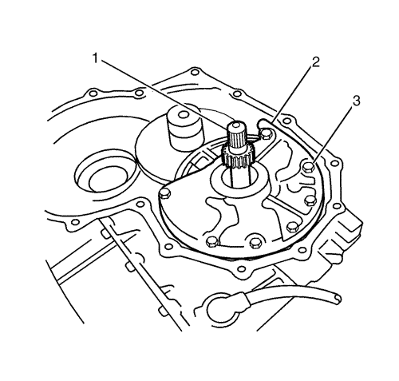
Nota: Al desmontar la bomba, tenga cuidado de que no se caiga el eje primario.
Nota: Si se trata de una transmisión con función de bloqueo, tenga cuidado de no dañar la junta tórica entre el eje primario y el convertidor de par.
- Desmonte el aro tórico del eje primario (1) y desmonte los pernos de la bomba de aceite (3) y la bomba de aceite (2).

- Desmonte el engranaje reductor (1).

- Desmonte los pernos del actuador de soporte (1), el perno del tope (2) y el actuador del soporte (3).
- Mientras balancea el trinquete de estacionamiento (4), saque el eje de dicho trinquete. Desmonte luego el trinquete de estacionamiento, el muelle del trinquete de estacionamiento (5) y el collarín del trinquete de estacionamiento.
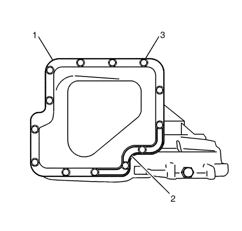
Nota:
| • | No use un destornillador para separar el refuerzo del cárter de aceite. |
| • | Elimine el sellante residual de la superficie del cárter y de la carcasa. |
| • | Asegúrese de que se ha eliminado todo el sellante. |
- Quite los tornillos de instalación del cárter del aceite (3) con el cárter de aceite (1) mirando hacia arriba. Desmonte luego el refuerzo (2) y el cárter de aceite, golpeando ligeramente con un martillo de plástico.
- Quite el imán del cárter del aceite.
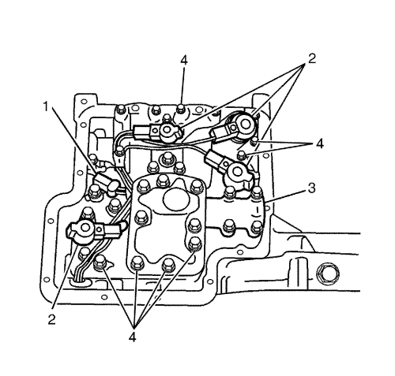
- Retire los conectores de cada solenoide (2).
- Quite los tornillos que sujetan el sensor de temperatura del aceite de transmisión (1) a masa, y quite los 7 pernos del cuerpo de válvulas de control (4). Entonces desmonte el cuerpo de válvulas de control (3) en sí.
Nota: Ni tire del mazo de cables al retirar el conector.
- Mientras presiona las lengüetas (2), saque el conector del solenoide (1) de la carcasa.
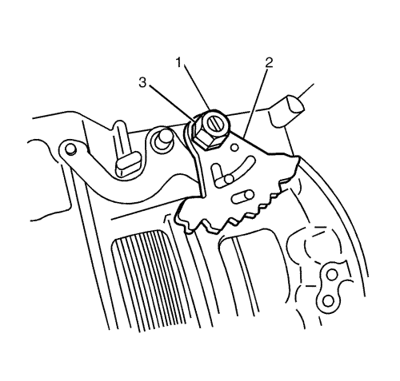
- Quite las 2 tuercas del plato manual (3) mientras sujeta todo el ancho del eje manual (1) por las caras planas y esmonte el plato manual (2).
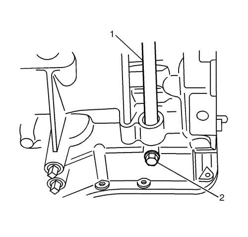
- Quite el tornillo de bloqueo del eje manual (2) y saque el eje manual (1).

- Desmonte el anillo en E (1) y luego la palanca de estacionamiento y la varilla de estacionamiento (2) como un conjunto.
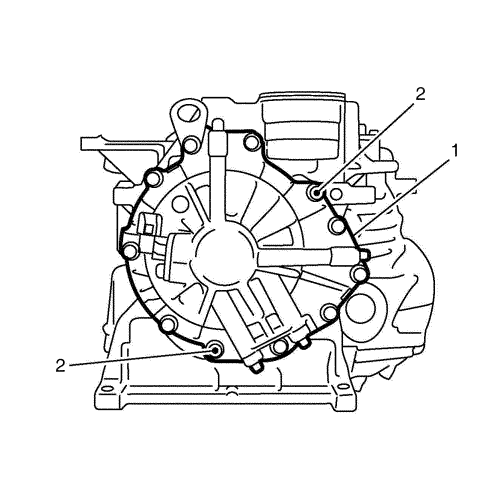
Nota:
| • | Retire las juntas tóricas de la cara final de la carcasa. |
| • | No use un destornillador para separar la tapa lateral de la caja de cambios. |
| • | Elimine completamente el sellante residual de la superficie de la tapa lateral y la caja de cambios. |
| • | Asegúrese de que se ha eliminado todo el sellante. |
- Quite los tornillos de la tapa lateral (2) con la tapa mirando hacia arriba y luego retire la tapa lateral (1).
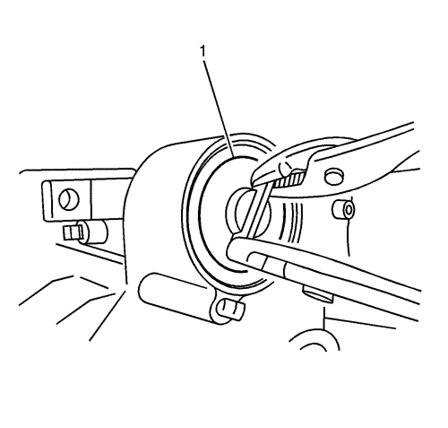
- Quite el anillo elástico de retención con un destornillador de punta plana y extraiga la tapa del servo de cinta (1) con unos alicates.
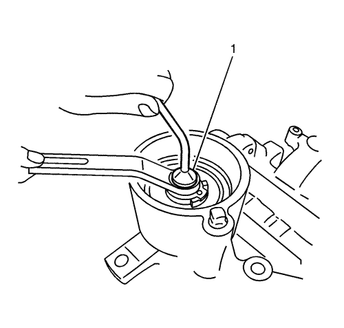
Nota: Apriete provisionalmente la tuerca de bloqueo para que no se salga el pasador de ventilación de aire.
- Sujete el vástago del pistón (1) y afloje la tuerca de bloqueo.
- Afloje el vástago del pistón.

- Desmonte el tambor del embrague de marcha atrás (1).
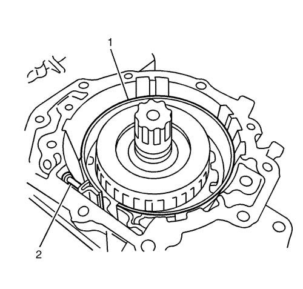
Nota: Para que la cinta de freno no se agriete al expandirse, átela con alambre.
- Desmonte la cinta de freno (1).
- Retire el pasador de extremo de anclaje (2).

Nota: Tenga cuidado de que no se caigan los cojinetes de los dos lados del conjunto del embrague de alta.
- Desmonte el conjunto del embrague de alta (1).

- Desmonte el cubo del embrague de alta (1).
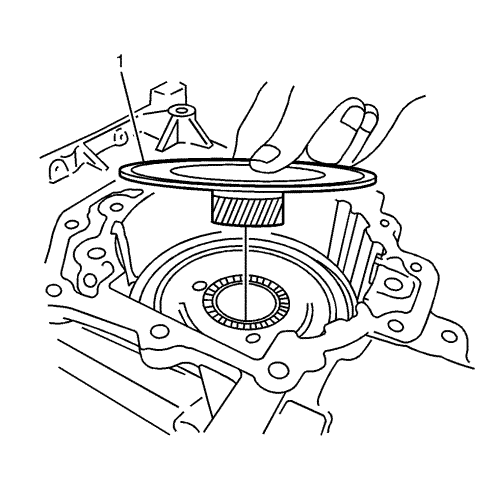
Nota: Tenga cuidado de que no se caigan los cojinetes del lado de la tapa lateral y la pista del cojinete en el lado del convertidor de par del conjunto de engranaje central delantero.
- Desmonte el conjunto del engranaje central delantero (1).

- Desmonte el anillo de retención (3) de pistón del servo de cinta usando el elevador de válvulas DT-47523 (1) y el implemento del elevador de válvulas DT-47522 (2).
Nota: El pistón del servo de cinta puede saltar debido a la fuerza del muelle del pistón. Tenga cuidado de que no se caiga el pistón.
- Golpee ligeramente el vástago del pistón (1) con un martillo de plástico y desmonte el pistón del servo de cinta con la fuerza de reacción del muelle del pistón.
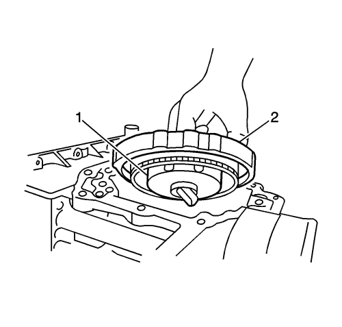
Nota: Tenga cuidado de que no se caiga el cojinete del lado de la tapa lateral y el cojinete de pista combinada del lado del convertidor de par del portasatélites delantero.
- Retire el anillo elástico de retención y desmonte luego el portasatélites delantero (1) y el embrague unidireccional de baja (2) como un conjunto.
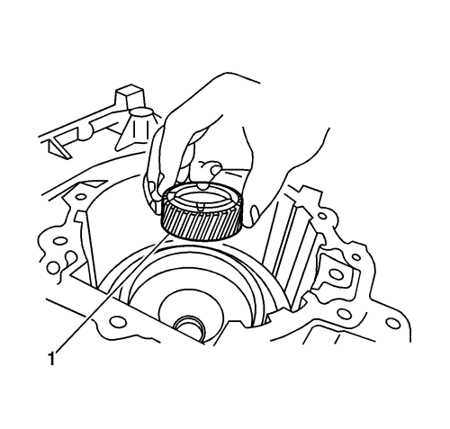
- Desmonte el engranaje central trasero (1).

Nota: Tenga cuidado de que no se caiga el cojinete del lado de la tapa lateral y el cojinete de pista combinada del lado del convertidor de par del conjunto del portasatélites trasero.
- Desmonte el conjunto del portasatélites trasero (1).

Nota: Tenga cuidado de que no se caiga el cojinete del lado de la tapa lateral y el cojinete de pista combinada del convertidor de par del engranaje interno trasero.
- Desmonte el engranaje interno trasero (1).
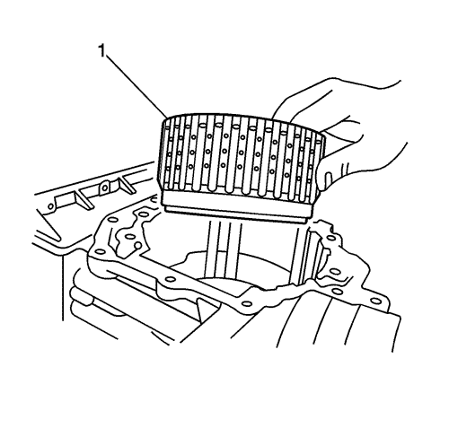
Nota: Tenga cuidado de que no se caigan los cojinetes de pista combinada del lado del convertidor de par del conjunto del embrague de baja.
- Desmonte el conjunto del embrague de baja (1) como un conjunto.

- Desmonte el cojinete (1) y la arandela de empuje (2) del piñón secundario.
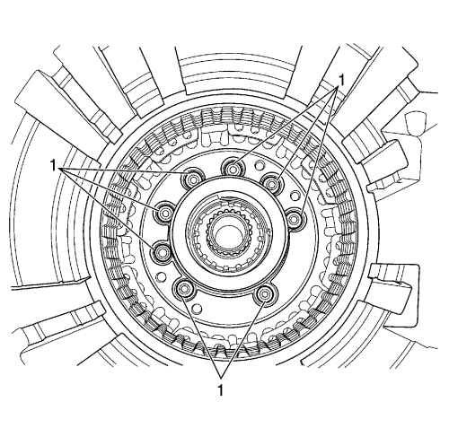
Nota: Desmonte la arandela de junta antes de tirar del conjunto de engranajes de salida para sacarlo. No vuelva a usar la junta tórica.
- Con el montaje de la cubierta lateral hacia arriba, desmonte las 2 arandelas de junta.
- Desmonte los 8 pernos de montaje del soporte del cojinete de engranajes de salida (1) con una llave hexagonal.
- Desmonte el conjunto de engranaje de salida usando la herramienta de desmontaje para conjuntos de engranaje de salida DT-50166.
- Desmonte la junta del semieje de la rueda delantera (1) de la carcasa.
- Desmonte el retén de aceite del eje primario de la campana del convertidor.